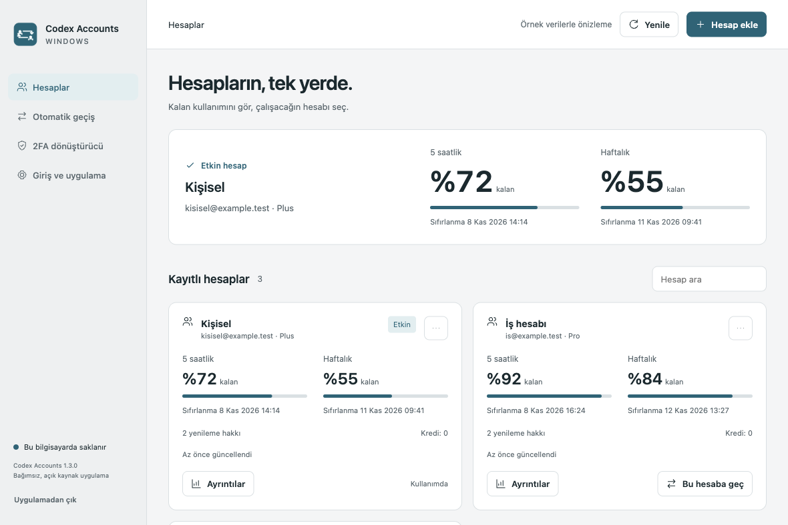
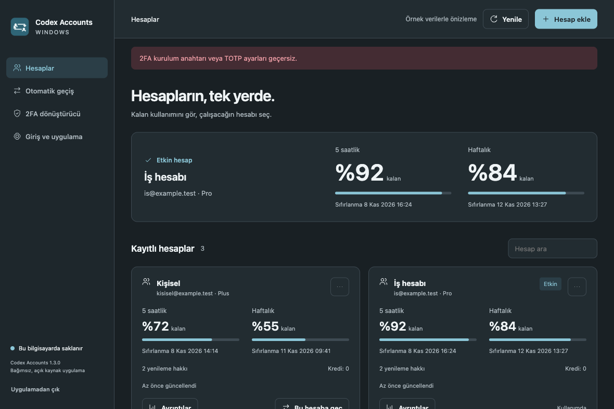

Hesaplar ve limitler
Resmî giriş üzerinden hesap ekle. Kalan kullanımını, sıfırlanma zamanını ve sunucunun sağladığı token geçmişini aynı yerden gör.
Windows · Açık kaynak · MIT
Kalan kullanımını gör, çalışacağın hesabı seç.
Hesap geçişi, kullanım takibi ve çevrimdışı 2FA; tek masaüstü uygulamasında.
Windows 10/11 Intel/AMD x64 · Ücretsiz topluluk önizlemesi

Resmî giriş üzerinden hesap ekle. Kalan kullanımını, sıfırlanma zamanını ve sunucunun sağladığı token geçmişini aynı yerden gör.
Elle geçiş yap veya isteğe bağlı otomatik geçişi aç. Ön bildirim, erteleme ve kurum hesabı tercihleriyle çalışma düzenini koru.
Kurulum anahtarından doğrulama kodu üret. İstersen anahtarını Windows DPAPI ile şifreli sakla; tek tıkla kodu ekrandan temizle.

Açık, koyu veya sistem teması. Sistem tepsisinden hızlı hesap seçimi. Windows açılışında başlatma tercihi.
Hesap verileri bilgisayarında tutulur. Uygulama için ayrı bir geliştirici sunucusu veya analiz servisi yoktur.
Verilerin nerede saklandığını okuZIP ile kurmadan kullanım da mevcut. Güncellerken uygulamayı tepsiden kapatıp yeni kurulumu üzerine çalıştır. Paket dijital imzalı değildir; Windows uyarı gösterebilir. Kaynağı ve dosya özetini doğrula.
Topluluk önizlemesidir. Otomatik ve örnek hesap testleri canlı girişin, DPAPI’nin veya native Codex hesap geçişinin her bilgisayarda çalıştığını garanti etmez. Doğrulama kapsamı
Projenin geliştiricisi
Full Stack Software Engineer · Deca Yazılım Kurucusu
İşletmeler için özel yazılım, web ve mobil uygulamalar, SaaS ürünleri ve sistem entegrasyonları geliştiriyorum.